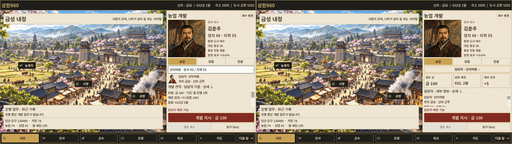
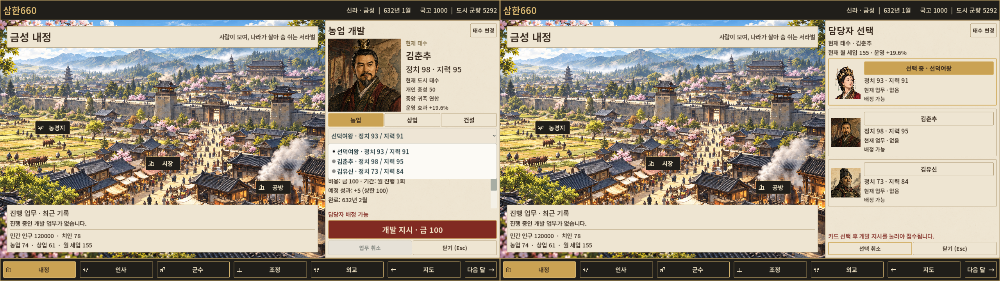
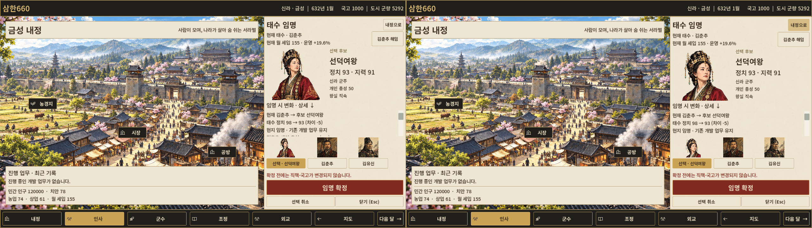

632년 신라 · 금성. 왼쪽 V1.1 → 오른쪽 V1.2. 이미지를 누르면 원본 크기로 열립니다.
적용 보고서 · GUI 167개 / 내정 회귀 131개 통과. 이 묶음은 보고서와 화면 자료입니다.

1080p 전후 · 승인 시안과 비교

1080p 전후 · 내정 기본 시안과 구성 비교 — 담당자 카드 전용 시안은 없습니다.

원본 초상·도시 전경과 게임 규칙은 유지했습니다. 목재·금속 장식과 서예 제목 제작, 게임 실행용 내보내기는 이번 범위에 포함하지 않습니다.